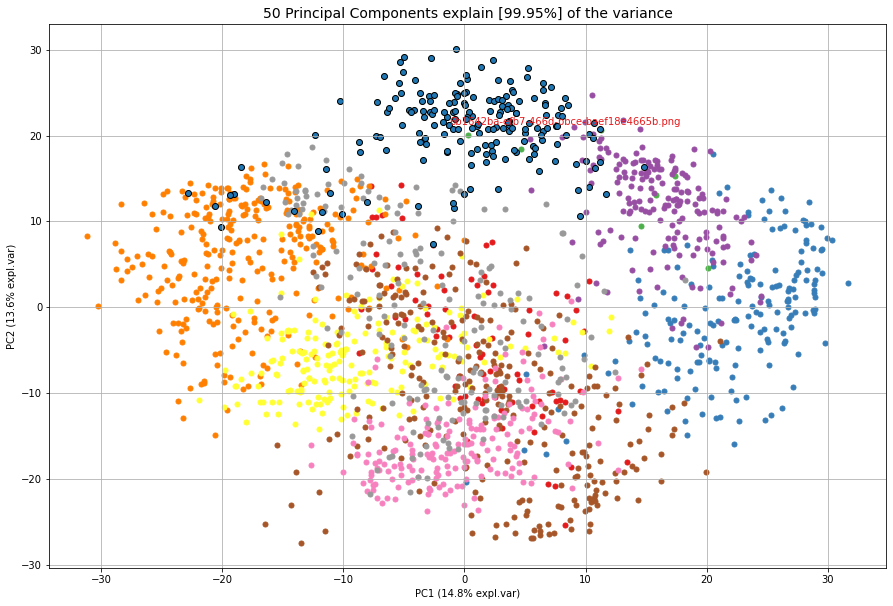
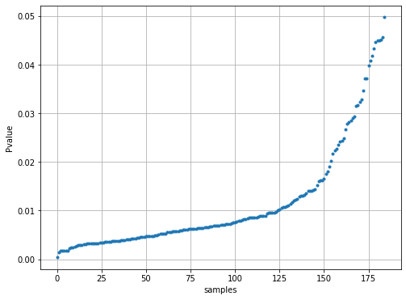
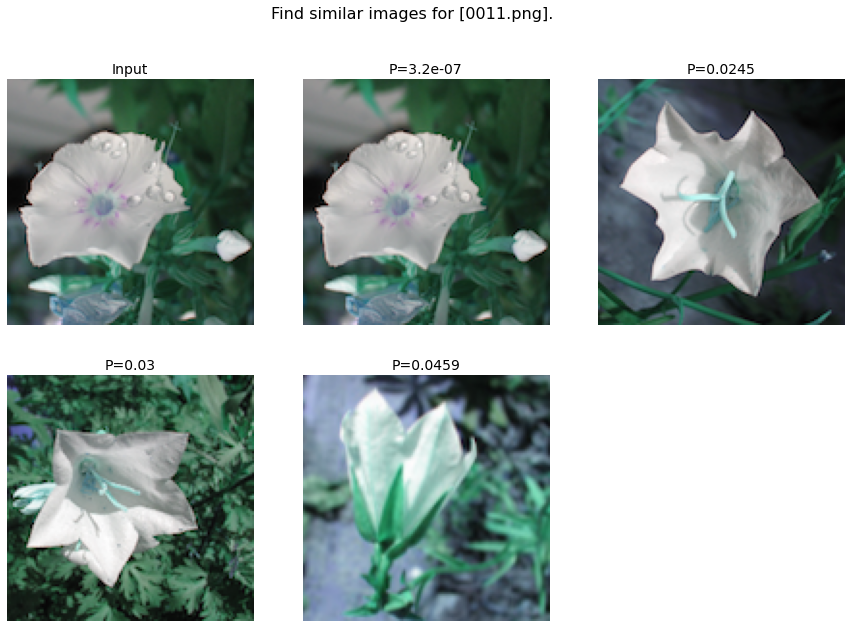
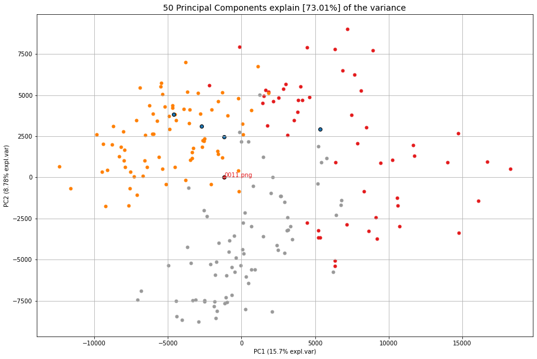
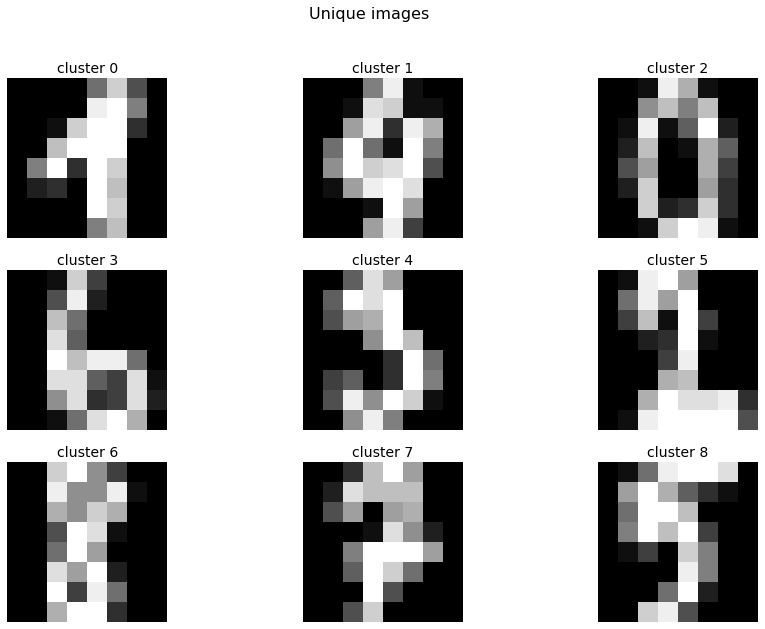
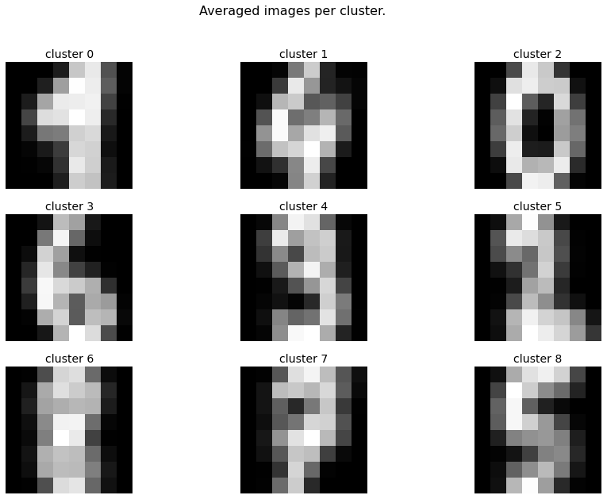
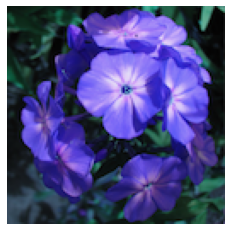

This section describes the core functionalities of clustimage.
Many of the functionalities are written in a generic manner which allows to be used in various applications.
Core functionalities
The are 5 core functionalities of clustimage that allows to preprocess the input images, robustly determines the optimal number of clusters, and then optimize the clusters if desired.
fit_transform()
extract_faces()
cluster()
find()
unique()
Fit and transform
The fit_transform function allows to detect natural groups or clusters of images. It works using a multi-step proces of pre-processing, extracting the features, and evaluating the optimal number of clusters across the feature space. The optimal number of clusters are determined using well known methods such as silhouette, dbindex, and derivatives in combination with clustering methods, such as agglomerative, kmeans, dbscan and hdbscan. Based on the clustering results, the unique images are also gathered.
Examples can be found here: clustimage.clustimage.Clustimage.fit_transform()
The fit_transform contains 4 core functionalities that can also be used seperatly which provides more control:
import_data()
extract_feat()
embedding()
cluster()
import_data
The input for the clustimage.clustimage.Clustimage.import_data() can have multiple forms; path to directory, list of strings and and array-like input.
The following steps are used for which the parameters needs to be set during initialization:
Images are imported with specific extention ([‘png’,’tiff’,’jpg’]),
Each input image can be grayscaled.
Resizing images in the same dimension such as (128,128). Note that if an array-like dataset [Samples x Features] is given as input, setting these dimensions are required to restore the image in case of plotting.
Independent of the input, a dict is returned in a consistent manner.
# Initialize
cl = Clustimage(method='pca')
# Import data
X = cl.import_example(data='flowers')
# Check whether in is dir, list of files or array-like
X = cl.import_data(X)
print(cl.results.keys())
# dict_keys(['img', 'feat', 'xycoord', 'pathnames', 'labels', 'filenames'])
# Note that only the keys img, pathnames and filenames are filled.
extract_feat
Extracting of features is performed in the clustimage.clustimage.Clustimage.extract_feat() function.
There are different options the extract features from the image as lised below. Note that these settings needs to be set during initialization.
‘pca’ : PCA feature extraction
‘hog’ : hog features extraced
‘pca-hog’ : PCA extracted features from the HOG desriptor
‘ahash’: Average hash
‘phash’: Perceptual hash
‘dhash’: Difference hash
‘whash-haar’: Haar wavelet hash
‘whash-db4’: Daubechies wavelet hash
‘colorhash’: HSV color hash
‘crop-resistant’: Crop-resistant hash
None : No feature extraction
# Initialize
cl = Clustimage(method='pca')
# Import data
X = cl.import_example(data='flowers')
# Check whether in is dir, list of files or array-like
X = cl.import_data(X)
# Extract features using method
Xfeat = cl.extract_feat(X)
print(cl.results.keys())
# dict_keys(['img', 'feat', 'xycoord', 'pathnames', 'labels', 'filenames'])
# At this point, the key: 'feat' is filled.
embedding
The embedding is performed using tSNE in the clustimage.clustimage.Clustimage.embedding() function.
The coordinates are used for vizualiation purposes only but if desired. However, when setting the cluster_space parameter to ‘low’ in the cluster function, the clustering will be performed in the low-dimensional tSNE space.
# Initialize
cl = Clustimage(method='pca')
# Import data
X = cl.import_example(data='flowers')
# Check whether in is dir, list of files or array-like
X = cl.import_data(X)
# Extract features using method
Xfeat = cl.extract_feat(X)
# Embedding using tSNE
xycoord = cl.embedding(Xfeat)
print(cl.results.keys())
# dict_keys(['img', 'feat', 'xycoord', 'pathnames', 'labels', 'filenames'])
# At this point, the key: 'xycoord' is filled.
cluster
The cluster function is build on clusteval, which is a python package that provides various evalution methods for unsupervised cluster validation.
The optimal number of clusters are determined using well known methods such as silhouette, dbindex, and derivatives in combination with clustering methods, such as agglomerative, kmeans, dbscan and hdbscan.
This function can be run after the fit_transform function to solely optimize the clustering results or try-out different evaluation approaches without repeately performing all the steps of preprocessing.
Besides changing evaluation methods and metrics, it is also possible to cluster on the low-embedded feature space. This can be done setting the parameter cluster_space='low'.
# Initialize
cl = Clustimage(method='pca')
# Import data
X = cl.import_example(data='flowers')
# Check whether in is dir, list of files or array-like
X = cl.import_data(X)
# Extract features using method
Xfeat = cl.extract_feat(X)
# Embedding using tSNE
xycoord = cl.embedding(Xfeat)
# Cluster
labels = cl.cluster(cluster='agglomerative', evaluate='silhouette', metric='euclidean', linkage='ward', min_clust=3, max_clust=25, cluster_space='high')
print(cl.results.keys())
# dict_keys(['img', 'feat', 'xycoord', 'pathnames', 'labels', 'filenames'])
# At this point, the key: 'labels' is filled.
More examples can also be found here: clustimage.clustimage.Clustimage.cluster()
extract_faces
To cluster faces on images, we first need to detect, and extract the faces from the images.
The extract_faces function does this task.
Faces and eyes are detected using haarcascade_frontalface_default.xml and haarcascade_eye.xml in python-opencv.
Examples can be found here: clustimage.clustimage.Clustimage.extract_faces()
find
The find function clustimage.clustimage.Clustimage.find() allows to find images that are similar to that of the input image.
Finding images can be performed in two manners:
Based on the k-nearest neighbour
Based on significance after probability density fitting
In both cases, the adjacency matrix is first computed using the distance metric (default Euclidean). In case of the k-nearest neighbour approach, the k nearest neighbours are determined. In case of significance, the adjacency matrix is used to to estimate the best fit for the loc/scale/arg parameters across various theoretical distribution. The tested disributions are [‘norm’, ‘expon’, ‘uniform’, ‘gamma’, ‘t’]. The fitted distribution is basically the similarity-distribution of samples. For each new (unseen) input image, the probability of similarity is computed across all images, and the images are returned that are P <= alpha in the lower bound of the distribution. If case both k and alpha are specified, the union of detected samples is taken. Note that the metric can be changed in this function but this may lead to confusions as the results will not intuitively match with the scatter plots as these are determined using metric in the fit_transform() function.
Example to find similar images using 1D vector as input image.
from clustimage import Clustimage
import matplotlib.pyplot as plt
import pandas as pd
# Init with default settings
cl = Clustimage(method='pca')
# load example with digits
X = cl.import_example(data='mnist')
# Cluster digits
results = cl.fit_transform(X)
# Lets search for the following image:
plt.figure(); plt.imshow(X[0,:].reshape(cl.params['dim']), cmap='binary')
# Find images
results_find = cl.find(X[0:3,:], k=None, alpha=0.05)
# Show whatever is found. This looks pretty good.
cl.plot_find()
cl.scatter(zoom=3)
# Extract the first input image name
filename = [*results_find.keys()][1]
# Plot the probabilities
plt.figure(figsize=(8,6))
plt.plot(results_find[filename]['y_proba'],'.')
plt.grid(True)
plt.xlabel('samples')
plt.ylabel('Pvalue')
# Extract the cluster labels for the input image
results_find[filename]['labels']
# The majority of labels is for class 0
print(pd.value_counts(results_find[filename]['labels']))
# 0 171
# 7 8
# Name: labels, dtype: int64
|
 |
 |
|


** Example to find similar images based on the pathname as input.**
from clustimage import Clustimage
# Init with default settings
cl = Clustimage(method='pca')
# load example with flowers
pathnames = cl.import_example(data='flowers')
# Cluster flowers
results = cl.fit_transform(pathnames[1:])
# Lets search for the following image:
img = cl.imread(pathnames[10], colorscale=1)
plt.figure(); plt.imshow(img.reshape((128,128,3)));plt.axis('off')
# Find images
results_find = cl.find(pathnames[10], k=None, alpha=0.05)
# Show whatever is found. This looks pretty good.
cl.plot_find()
cl.scatter()
 |
 |
Examples can be found here: clustimage.clustimage.Clustimage.find()
unique
The unique images can be computed using the unique clustimage.clustimage.Clustimage.unique() and are detected by first computing the center of the cluster, and then taking the image closest to the center.
Lets demonstrate this by example and the digits dataset.
from clustimage import Clustimage
# Init with default settings
cl = Clustimage(method='pca')
# load example with digits
X = cl.import_example(data='mnist')
# Find natural groups of digits
results = cl.fit_transform(X)
# Show the unique detected images
cl.results_unique.keys()
# Plot the digit that is located in the center of the cluster
cl.plot_unique(img_mean=False)
# Average the image per cluster and plot
cl.plot_unique()
# Compute again with other metric desired
cl.unique()
 |
 |
Preprocessing
The preprocessing step is the function clustimage.clustimage.Clustimage.imread(), and contains 3 functions to handle the import, scaling and resizing of images.
This function requires the full path to the image for which the first step is reading the images and colour scaling it based on the input parameter grayscale.
If grayscale is set to True, the cv2.COLOR_GRAY2RGB setting from python-opencv is used.
The pre-processing has 4 steps and are exectued in this order.
Import data.
Conversion to gray-scale (user defined)
Scaling color pixels between [0-255]
Resizing
# Import libraries
from clustimage import Clustimage
import matplotlib.pyplot as plt
# Init
cl = Clustimage()
# Load example dataset
pathnames = cl.import_example(data='flowers')
# Preprocessing of the first image
img = cl.imread(pathnames[0], dim=(128,128))
# Plot
plt.figure()
plt.imshow(img.reshape(128,128,3))
plt.axis('off')
|
 |

imscale
The imscale function clustimage.clustimage.Clustimage.imscale() is only applicable for 2D-arrays (images).
Scaling data is an import pre-processing step to make sure all data is ranged between the minimum and maximum range.
The images are scaled between [0-255] by the following equation:
Ximg * (255 / max(Ximg) )
imresize
The imresize function clustimage.clustimage.imresize() resizes the images into 128x128 pixels (default) or to an user-defined size.
The function depends on the functionality of python-opencv with the interpolation: interpolation=cv2.INTER_AREA.
Output
The results obtained from the clustimage.clustimage.Clustimage.fit_transform() or clustimage.clustimage.Clustimage.cluster() is a dictionary containing the following keys:
* img : Image vector of the preprocessed images.
* feat : Extracted feature.
* xycoord : X and Y coordinates from the embedding.
* pathnames : Absolute path location to the image file.
* filenames : File names of the image file.
* labels : Cluster labels.
For demonstration purposes I will load the flowers dataset and cluster the images.
# Import library
from clustimage import Clustimage
# Initialize
cl = Clustimage(method='pca')
# Import data
pathnames = cl.import_example(data='flowers')
# Cluster flowers
results = cl.fit_transform(pathnames)
# All results are stored in a dict:
print(cl.results.keys())
# Which is the same as:
print(results.keys())
# dict_keys(['img', 'feat', 'xycoord', 'pathnames', 'labels', 'filenames'])
Extract images that belong to a certain cluster and make some plots.
# Extracting images that belong to cluster label=0:
label = 0
Iloc = cl.results['labels']==label
pathnames = cl.results['pathnames'][Iloc]
# Extracting xy-coordinates for the scatterplot for cluster 0:
import matplotlib.pyplot as plt
xycoord = cl.results['xycoord'][Iloc]
plt.figure()
plt.scatter(xycoord[:,0], xycoord[:,1])
plt.title('Cluster %.0d' %label)
# Plot the images for cluster 0:
imgs = cl.results['img'][Iloc]
# Make sure you get the right dimension
dim = cl.get_dim(cl.results['img'][Iloc][0,:])
# Plot
for img, pathname in zip(imgs, pathnames):
plt.figure()
plt.imshow(img.reshape(dim))
plt.title(pathname)
Generic functionalities
clustimage contains various generic functionalities that are internally used but may be usefull too in other applications.
wget
Download files from the internet and store on disk.
Examples can be found here: clustimage.clustimage.wget()
# Import library
import clustimage as cl
# Download
images = cl.wget('https://erdogant.github.io/datasets/flower_images.zip', 'c://temp//flower_images.zip')
unzip
Unzip files into a destination directory.
Examples can be found here: clustimage.clustimage.unzip()
# Import library
import clustimage as cl
# Unzip to path
dirpath = cl.unzip('c://temp//flower_images.zip')
listdir
Recusively list the files in the directory.
Examples can be found here: clustimage.clustimage.listdir()
# Import library
import clustimage as cl
# Unzip to path
dirpath = 'c://temp//flower_images'
pathnames = cl.listdir(dirpath, ext=['png'])
set_logger
Change status of the logger.
Examples can be found here: clustimage.clustimage.set_logger()
# Change to verbosity message of warnings and higher
set_logger(verbose=30)
extract_hog
Histogram of Oriented Gradients (HOG), is a feature descriptor that is often used to extract features from image data.
Examples can be found here clustimage.clustimage.Clustimage.extract_hog() and a more detailed explanation can be found in the Feature Extraction - HOG section.